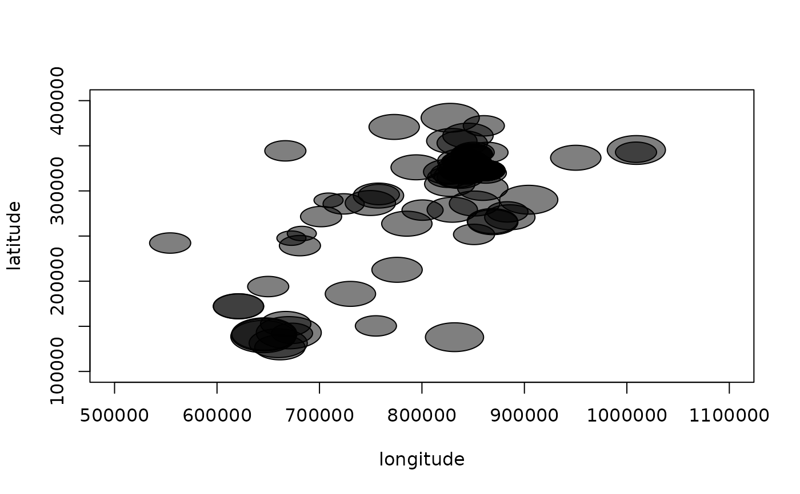
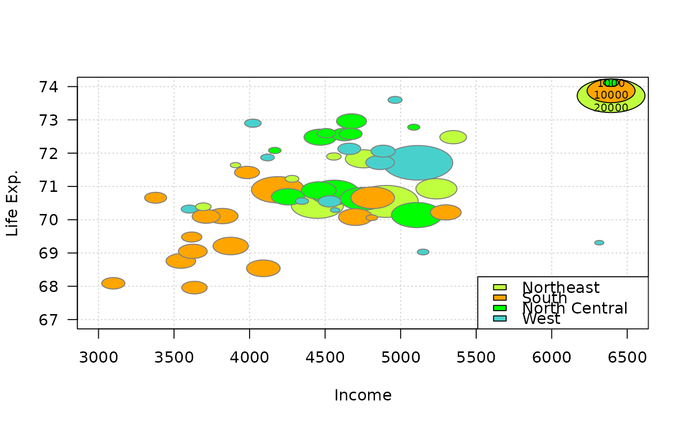

PlotBubble.RdDraw a bubble plot, defined by a pair of coordinates x, y to place the bubbles, an area
definition configuring the dimension and a color vector setting the color of the bubbles.
The legitimation to define a new function instead of just using plot(symbols(...)) is the automated calculation of the axis limits, ensuring that
all bubbles will be fully visible.
PlotBubble(x, ...)
# S3 method for default
PlotBubble(x, y, area, col = NA, cex = 1, border = par("fg"),
xlim = NULL, ylim = NULL, na.rm = FALSE, ...)
# S3 method for formula
PlotBubble(formula, data = parent.frame(), ..., subset, ylab = varnames[response])the x and y co-ordinates for the centres of the bubbles. They can be specified in any way which is accepted by xy.coords.
a vector giving the area of the bubbles.
colors for the bubbles, passed to symbol.
The default NA (or also NULL) means do not fill, i.e., draw transparent bubbles.
extension factor for the area.
the border color fot the bubbles. The default means par("fg"). Use border = NA to omit borders.
axes limits.
logical, should NAs be omitted? Defaults to FALSE.
a formula of the form lhs ~ rhs where lhs gives the data values and rhs the corresponding groups.
an optional matrix or data frame (or similar: see model.frame) containing the variables in the formula formula.
By default the variables are taken from environment(formula).
an optional vector specifying a subset of observations to be used.
the y-label for the plot used in the formula interface.
the dots are passed to the plot function.
Argument inches controls the sizes of the symbols. If TRUE (the default), the symbols are scaled so that the largest dimension of any symbol is one inch. If a positive number is given the symbols are scaled to make largest dimension this size in inches (so TRUE and 1 are equivalent). If inches is FALSE, the units are taken to be those of the appropriate axes.
This behaviour is the same as in symbols.
A legend can be added with BubbleLegend.
PlotBubble(latitude ~ longitude, area=(smoky+1)*2e8,
col=SetAlpha(1, 0.5), data=d.whisky)

#> [[1]]
#> [1] 286580 326340 352960 141560 355350 194050 247670 340754 340754 270820
#> [11] 307750 332680 212600 323450 325800 303330 242260 294860 131330 126680
#> [21] 142210 142920 318790 290250 316600 328920 323520 266610 263670 271570
#> [31] 332360 295960 370860 322640 381020 327610 340754 319820 251810 172090
#> [41] 327760 326490 361200 333000 320950 332680 252810 344380 319560 322640
#> [51] 276750 327650 285630 345340 342610 152660 319470 140430 138680 322640
#> [61] 239370 322640 327710 372120 322640 322640 332950 185940 336730 286040
#> [71] 326140 342850 326930 278740 172280 340754 342650 137950 319210 321180
#> [81] 265360 150450 279120 315100 315180 289690
#>
#> $ylab
#> [1] "latitude"
#>
#> $area
#> [1] 600000000 400000000 600000000 1000000000 600000000 400000000
#> [7] 200000000 400000000 400000000 600000000 600000000 400000000
#> [13] 600000000 400000000 600000000 600000000 400000000 600000000
#> [19] 800000000 600000000 400000000 1000000000 400000000 800000000
#> [25] 600000000 600000000 600000000 600000000 600000000 400000000
#> [31] 400000000 400000000 600000000 400000000 800000000 200000000
#> [37] 400000000 400000000 400000000 600000000 400000000 400000000
#> [43] 600000000 400000000 400000000 400000000 200000000 400000000
#> [49] 400000000 400000000 400000000 400000000 400000000 800000000
#> [55] 400000000 600000000 400000000 1000000000 1000000000 400000000
#> [61] 400000000 400000000 400000000 400000000 400000000 400000000
#> [67] 600000000 600000000 600000000 600000000 600000000 400000000
#> [73] 400000000 400000000 600000000 400000000 400000000 800000000
#> [79] 400000000 600000000 600000000 400000000 600000000 400000000
#> [85] 400000000 200000000
#>
#> $col
#> [1] "#00000080"
#>
cols <- c("olivedrab1","orange","green","mediumturquoise","mediumorchid2","firebrick1")
PlotBubble(x = state.x77[,"Income"], y = state.x77[,"Life Exp"], cex=.00004,
area = state.x77[,"Population"], col = cols[state.region], border="grey50",
panel.first=grid(), xlab="Income", ylab="Life Exp.", las=1
)
BubbleLegend(x = "topright", area = c(20000, 10000, 1000), cex=.00004, frame=NA,
cols=cols[1:3], labels = c(20000, 10000, 1000), cex.names=0.7)
legend(x="bottomright", fill=cols[1:4], legend=levels(state.region))
